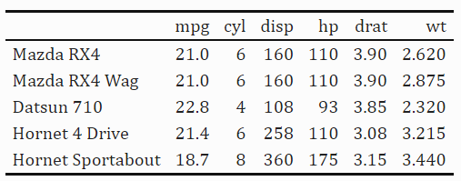

‘Insert’ Table in LaTeX generated by R. Table (R code to LaTeX code)
LaTeX
table
kableExtra
Author
Te
Published
November 26, 2022

Table syntax in LaTeX is complicated
Inserting (Generating) Table in LaTeX causes physical and psychological pain (at least for me). That is due to the complex LaTeX Table syntax,for instance, the unlimited use of & symbol as a maker for column alignment. It gets even worse for left/center/right alignment within the same column.
Basically the same way as with Excel and the code will automatically generated.
Pro
For small datasets,
The input and formatting are very straightforward and intuitive.
Cons
You cannot do any calculation beyond the text itself.
It is not capable of processing large datasets.
Risk of errors arising from typos.
Solution 2
R is a language designed for statistics. And R has many great packages to make tables gt, gtsummary, gtExtrakable, kableExtra , etc.
The only thing you need to care about is the data manipulation itself, with a few lines of code the table is automatically generated and formatted based on your syntax.
So, it would be great if one could adopt the table directly from R to LaTeX.
The solution is put “latex” in the R code, then the output will be converted into LaTeX code with the data inside and one can directly copy and paste into LaTeX IDE.
Example: kbl(data,"latex", booktabs = T)
require(kableExtra)require(tidyverse)# get partial data from mtcars for making a tabledt <- mtcars[1:5,1:6]dt%>%kbl(caption ="Recreating booktabs style table") %>%kable_classic(full_width = F, html_font ="Cambria")
Why not use Rmarkdown/Quarto directly for an article or a Report It is pdf document friendly. Easily deal with inline column plot, which is still very diffcult for TeX system.